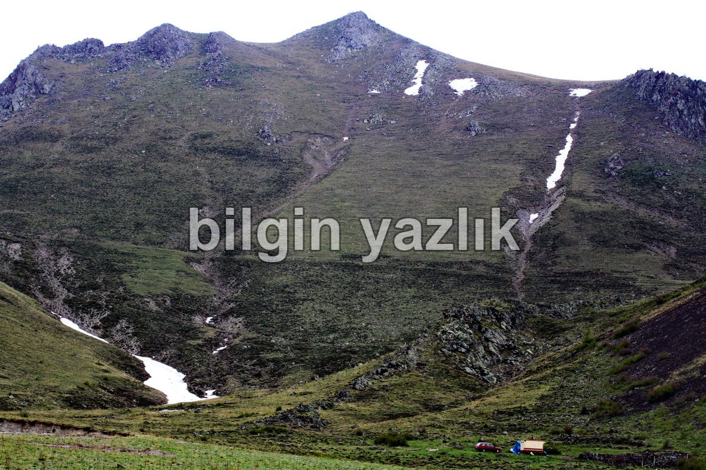
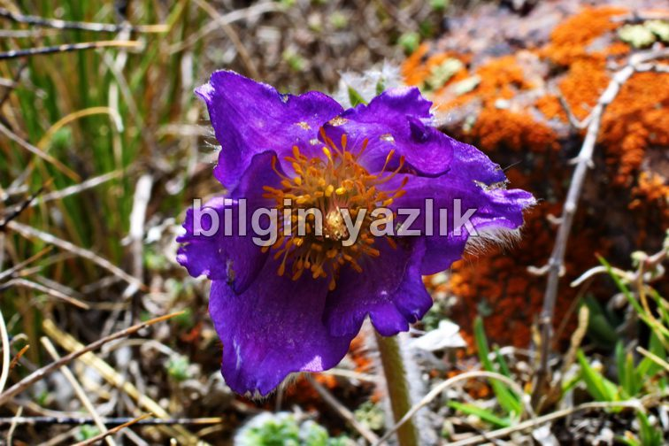
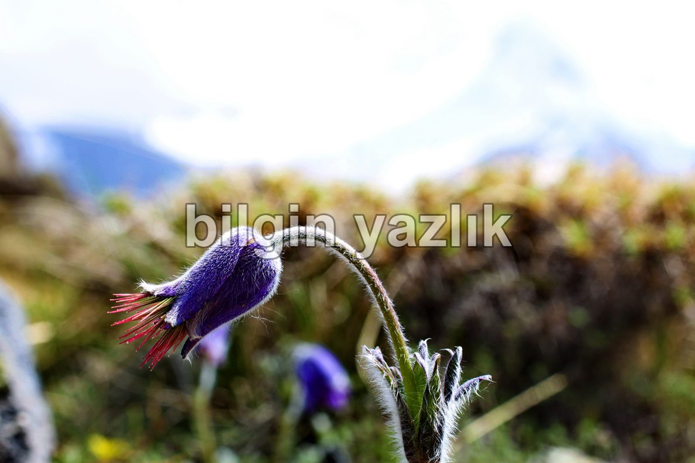
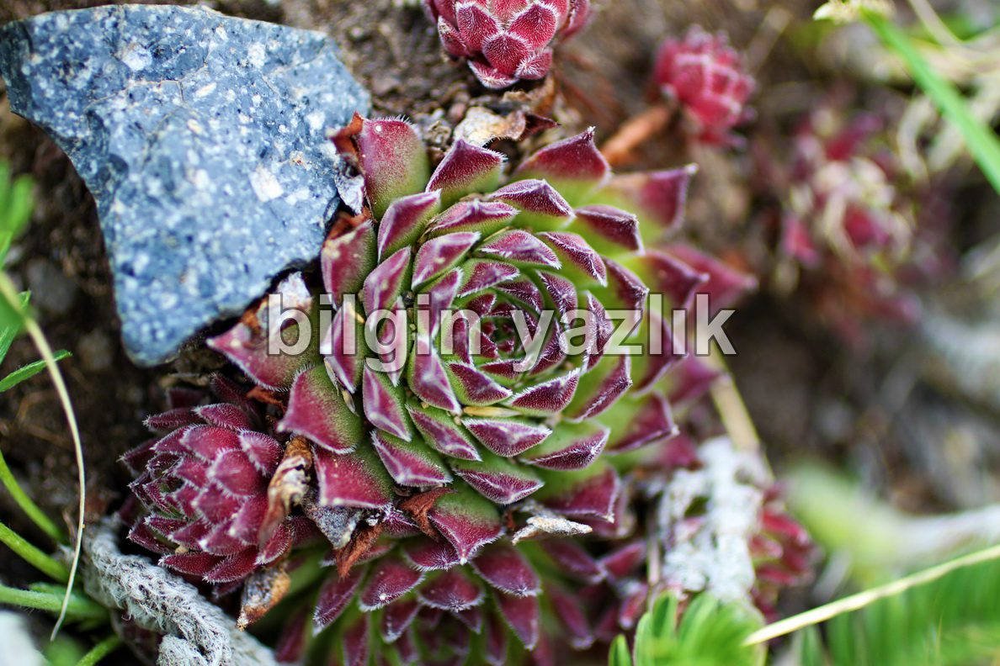

Kefeli Dağ
Erciyes’in kuzey bati eteginde yukselen bu dag, Hacilar ilcesi sinirlari icerisindedir. Hacilar’dan sut donduran yaylasina giden yola girdikten sonra ilk yol ayiriminda sola donuyorsunuz. Bu yol sizi dagin eteklerine kadar goturecektir. Dagin eteklerinde yaz aylarinda Hurmetci koyunden gelen yaylacilar yer aliyor. Daga dogrudan dik bir guzergah uzerinden cikmak akil kari degil, dagin dogu yamacina dogru yatay bir hatla tirmanilirsa dagin arka tatafina kadar dolanan bir patika gorulecektir. Bu yol sizi ayni zamanda Erciyes’in ic yaylarina tasiyacaktir. Dagin zirvesinde Mayis ayinda ters tuylu laleler gordum. Zirvede az da olsa bolgeye has kavak agaclari ve bodur camlar var. Sehire ve Erciyes’e mukemmel bir bakis acisi olan bu dag mutlaka gorulmeli. Zirve noktasi 2600 mt olarak olctum.
Kefeli Dağ
Kefeli Dağ – Ters Lale
Kefeli Dağ – Ters Lale
Kefeli Dağ




Bu yazı taliyol arşivinden taşınmıştır. · özgün kayıt